JTBD 1
Когда я хочу накопить на отпуск, технику, подушку безопасности или крупную покупку, я хочу видеть цель и прогресс выполнения, чтобы двигаться к ней без ощущения, что это невозможно.
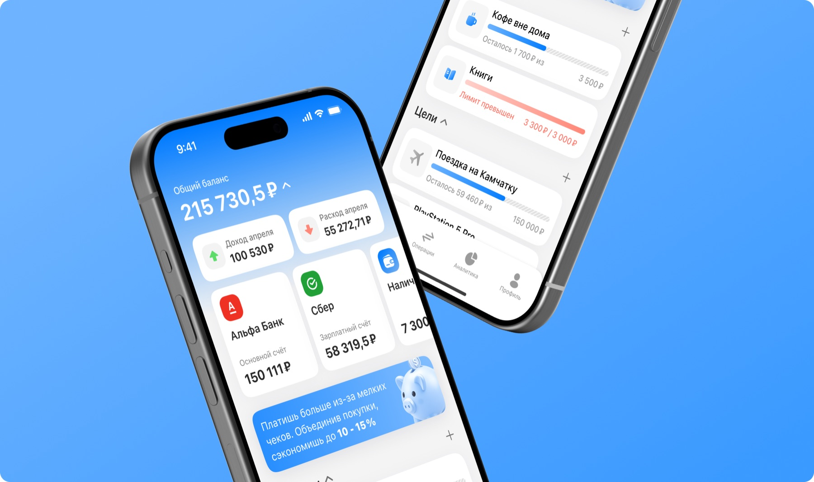
Спроектировать мобильный сервис для управления личными финансами, который сочетает простоту банковских приложений с инструментами анализа, планирования и контроля бюджета
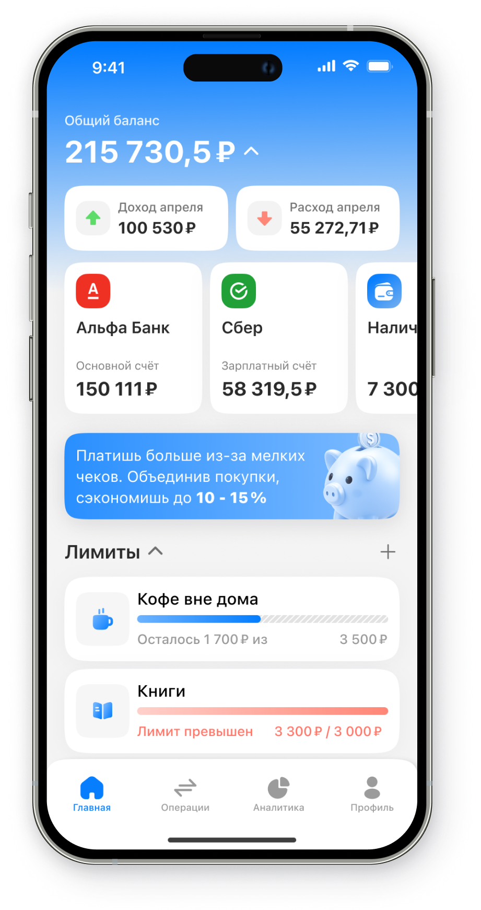
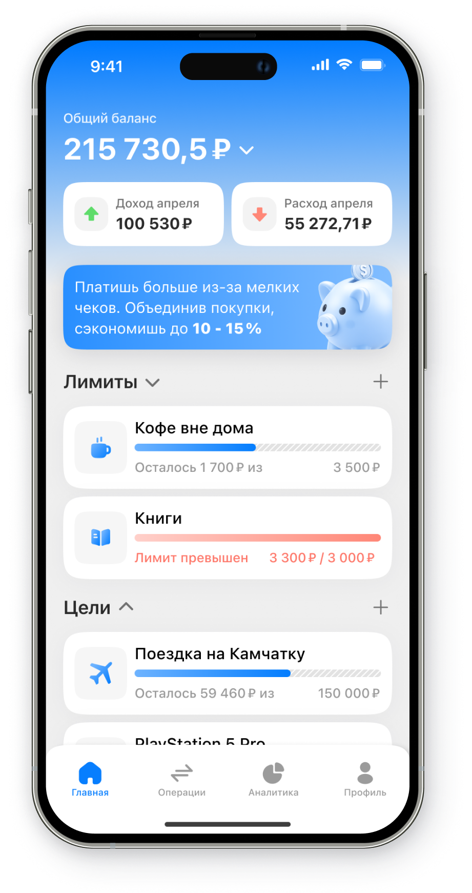
Текущий рынок приложений для управления личными финансами демонстрирует разрыв между текущим уровнем UX/UI решений и ожиданиями пользователей, сформированными современными банковскими fintech-продуктами.
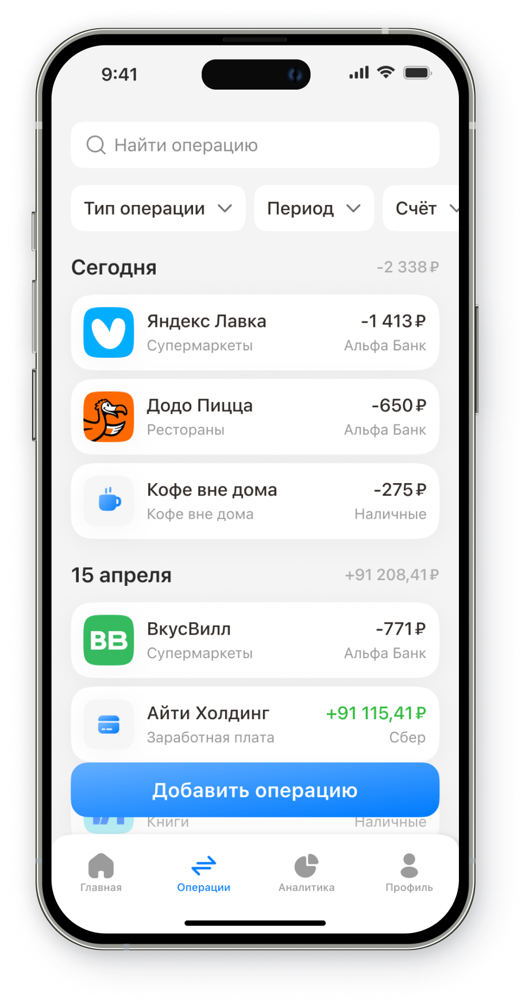
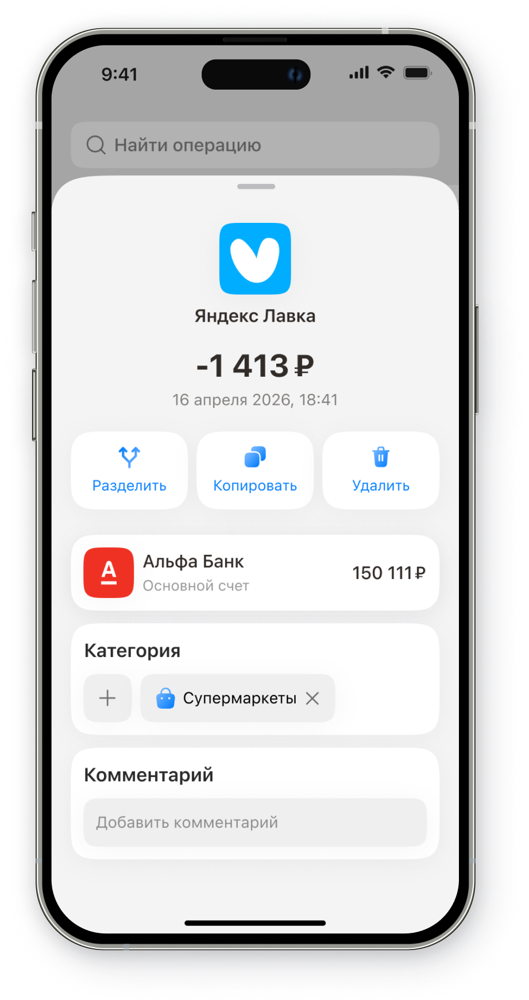
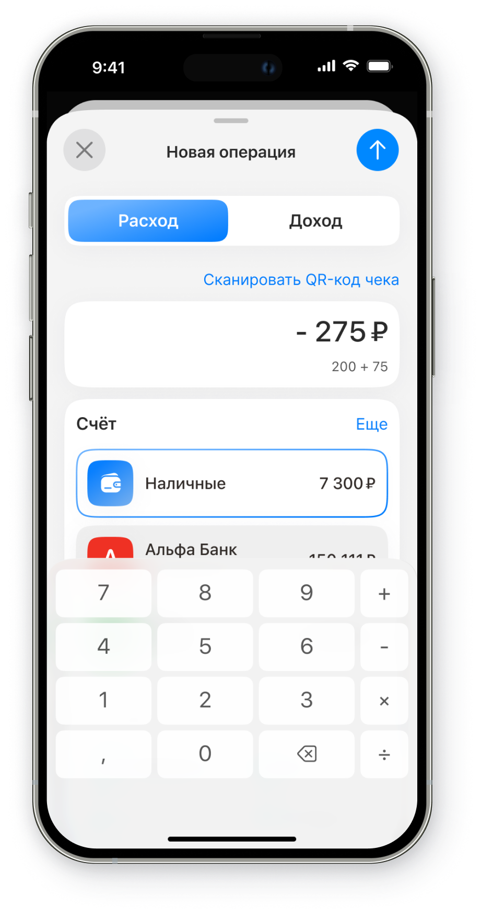
Когда я хочу накопить на отпуск, технику, подушку безопасности или крупную покупку, я хочу видеть цель и прогресс выполнения, чтобы двигаться к ней без ощущения, что это невозможно.
Когда я в конце месяца не понимаю, почему денег осталось меньше, чем ожидала, я хочу увидеть свои расходы по категориям, чтобы понять, где я теряю деньги и что можно изменить.
Когда я стараюсь больше осознанно обращаться с финансами, я хочу видеть реальные изменения в своих привычках, чтобы понимать, что мои усилия дают результат.
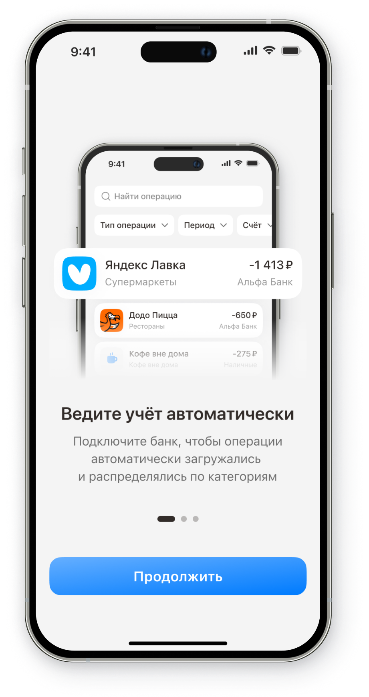
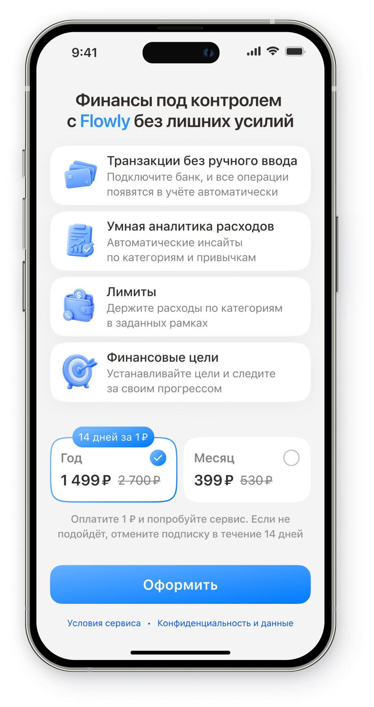
Изучила профильные приложения и банковские сервисы. Сравнила структуру продуктов, сценарии автоматической синхронизации банковских операций и ручного ввода расходов.
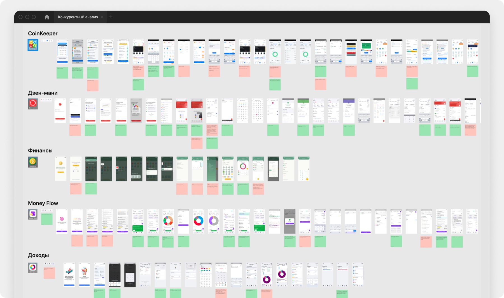
Если пользователь будет получать ежедневные инсайты на основе своих финансовых привычек, это мотивирует регулярно возвращаться в приложение.
Если графики доходов и расходов будут простыми и понятными, пользователи лучше поймут свои финансовые привычки.
Если добавить финансовые цели и прогресс накоплений, пользователи будут более мотивированы откладывать деньги.
Если пользователь видит все расходы и доходы в одном месте, он лучше контролирует бюджет.
С помощью GPT я проанализировала свои финансовые привычки, что позволило определить, какие рекомендации и инсайты будут наиболее полезны пользователям.
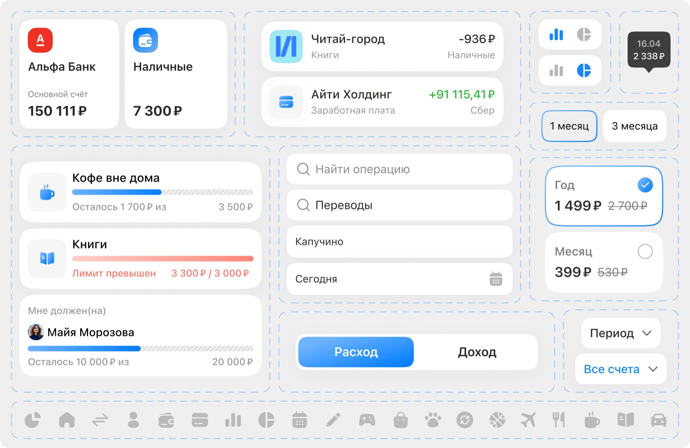
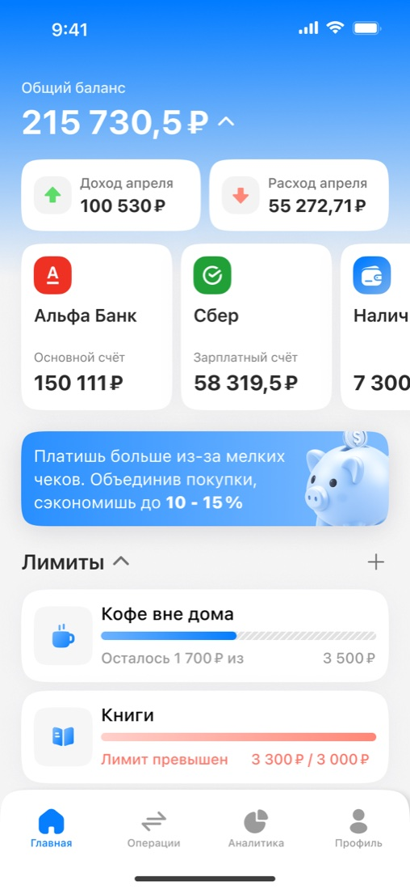
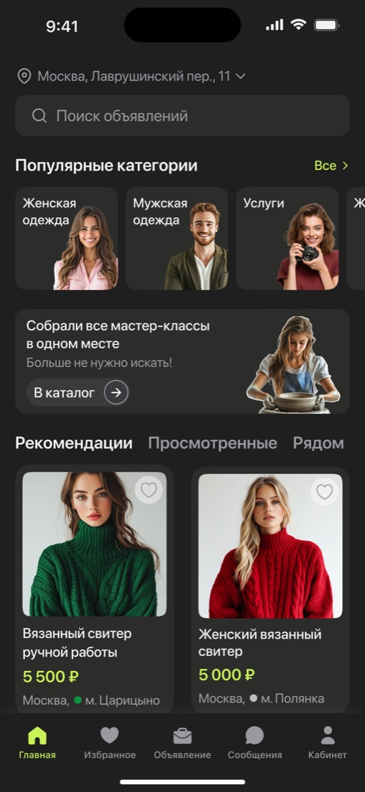
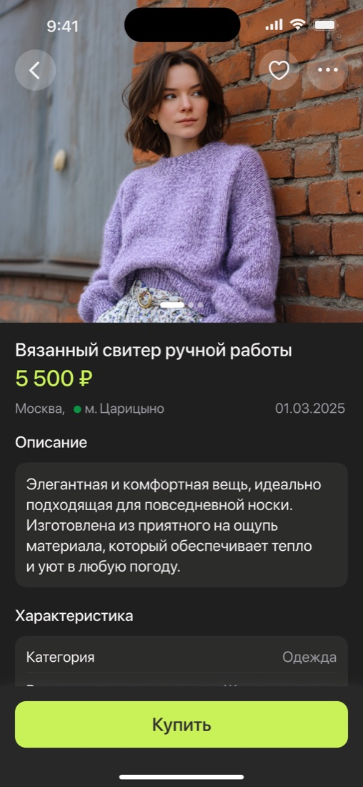
Подготовила MVP к запуску: разработала UX/UI, провела UX-тесты и доработала сценарии на основе обратной связи. Финальный продукт помогает пользователям следить за бюджетом и возвращаться к нему снова.